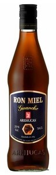

Arehucas Miel Guanche
- Origen
- Gran Canaria
- Descripción
- Es una especialidad de las islas compuesta por ron añejo y miel, con lo que se consigue una bebida de buen cuerpo y exquisito sabor. Ideal para tomarlo sin combinar en cualquier época del año. Sírvelo muy frío.
- Formato de venta
- Botella de ron miel, 70cL
- Precio
- 8,48€